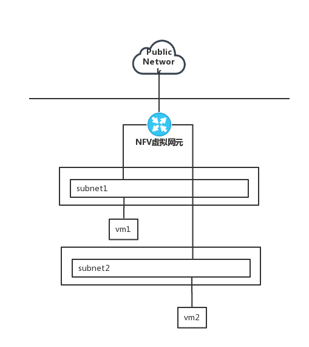

6wind NFV 实现
Posted on 2018-08-06(星期一) 11:29 in network
一、简介
NFV，即网络功能虚拟化，Network Function Virtualization。即通过使用 x86 的服务器作为物理设备，进而实现基于软件的网络功能。NFV 的实现有效地降低了网络组网中昂贵的路由器和交换机成本。通过分离硬件和软件的功能和抽象的方式，网络设备功能不再依赖于专用硬件资源，可成为新的云中的网络服务部署模式，虚拟网络元件之间的网络，基于实际业务需求自动部署，提供了灵活扩展性，故障隔离和自我愈合。
NFV 的网络功能虚拟化就是将原本是物理设备的路由器，交换机，测试仪器，变成软件的形式，作为一个镜像启动，而其功能不变。在云计算的基础设施平台上，部署基于 NFV 可编程网元，这些网元不受物理设备兼容性的限制，在云计算的基础上部署虚拟网元，使得云平台的资源利用率更加充分，但同时也对组网技术提出了更高的要求。
本文以 6wind 作为 NFV 虚拟网元设备，将其与基于 linuxbridge 和 vlan 实现的现有网络云平台进行结合，使用 NFV 网元实现云环境中 NAT 和安全组功能。以及进行网络性能测试。
二、NFV 连接不同网络之间通信
在我们现有网络环境中，不同网络之间通过 vlan 进行隔离，是无法互通的。我们知道在传统网络中，如果要和一个网络通信，只要和其网关相通就可以了。假设现在有两个不同 vlan 的网络 private1 和 private2，若要使两个网络中的虚拟主机进行通信，我们使 NFV 网元作为 Instance 启动，将 NFV 虚拟路由器连接这两个子网，并将分配给它的两个网络接口的 IP 地址配置成两个网络的网关，从而使流量通过 NFV 虚拟网元，实现子网之间的流量通过这个 NFV 虚拟路由器进行转发。

下面在测试环境进行配置，以实际例子进行说明。首先配置以下三个网络，一个作为外网，两个作为内网。
外网：
vlan:3967
public：172.32.0.0/24
内网：
vlan:3965
private1：12.12.12.0/24
vlan:3966
private2：172.16.10.0/24
2.1 配置不同子网互通
- 使用 6wind 作为镜像创建虚拟机，添加 public, private1, private2 子网，通过 vnc 进入虚拟机，进行 ip 地址，dhcp 服务配置，具体配置在后面介绍。ip 地址配置如下：
6wind:
ens3: 172.32.0.5
ens4: 12.12.12.1
ens5: 172.16.10.1
gateway: 172.32.0.1
这里为方便从外部访问 vrouter，在宿主机 br-3967 网桥上配置了 ip 地址 172.32.0.1，实现从外部宿主机访问虚拟机。
- 创建 vm1，添加 private1 子网。创建 vm2，添加 private2 子网。并将两个虚拟机分别创建到不同宿主机上。虚拟机创建成功之后，通过 vnc 进入虚拟机，修改网卡配置文件通过 DHCP 获取 ip 地址。重启 network 服务，查看当前网络信息。
vm1:
eth0: 12.12.12.120
gateway: 12.12.12.1
vm2:
eth0:172.16.10.100
gateway: 172.16.10.1
到这里为止，在 6wind 没有开启 nat 且禁用 filter 功能情况下，从 vm1 ping vm2，从vm2 ping vm1, 都能够 ping 通，结果符合预期。下面开启 filter 功能，配置 filter 规则满足以上需求。
- 整体网络流量走向图如下所示：
2.2 开启 filter 功能
- 打开 vrouter filter 功能，不配置任何规则，则从任何地方都无法访问路由器中所有的 ip 地址，故而虚拟机无法 ping 通自己的网关地址， 虚拟机之间也不能互通。验证结果如下，符合预期。
# 无法从宿主机ping及ssh访问vrouter
[root@POD23-CLU01-H028 ~]# ping 172.32.0.5
PING 172.32.0.5 (172.32.0.5) 56(84) bytes of data.
^C
--- 172.32.0.5 ping statistics ---
3 packets transmitted, 0 received, 100% packet loss, time 1999ms
[root@POD23-CLU01-H028 ~]# ssh admin@172.32.0.5
^C
# 无法从 vm1 ping 通其默认网关 12.12.12.1,无法 ping 通 vm2
- 配置允许外部流量 ping 及 ssh 访问 vrouter 网关地址。使用此功能实现云环境安全组，不应开放 vrouter ssh 功能。这里配置是为了实验操作方便。
# FILTER RULES
rule 20000 processing input ipv4 protocol tcp from any to 172.32.0.5[22] state new established do allow
rule 20010 processing output ipv4 protocol tcp from 172.32.0.5[22] to any state new established do allow
rule 20020 ipv4 protocol icmp echo-request from any to 172.32.0.5 do allow
rule 20030 ipv4 protocol icmp echo-reply from 172.32.0.5 to any do allow
# 验证如下
[root@POD23-CLU01-H028 ~]# ping -c 2 172.32.0.5
PING 172.32.0.5 (172.32.0.5) 56(84) bytes of data.
64 bytes from 172.32.0.5: icmp_seq=1 ttl=64 time=0.164 ms
64 bytes from 172.32.0.5: icmp_seq=2 ttl=64 time=0.162 ms
--- 172.32.0.5 ping statistics ---
2 packets transmitted, 2 received, 0% packet loss, time 999ms
rtt min/avg/max/mdev = 0.162/0.163/0.164/0.001 ms
[root@POD23-CLU01-H028 ~]# ssh admin@172.32.0.5
admin@172.32.0.5's password:
Welcome to Turbo Router Embedded Edition (EE) - 1.6.4
Last login: Sun Aug 5 10:05:51 2018 from 172.32.0.1
router{}
- 配置 filter 规则，允许外部访问 subnet1: 12.12.12.0/24，subnet2: 172.16.10.0/24，为 vm 开启 allow ping & ssh 规则。
# 开启 ping
rule 20080 ipv4 protocol icmp echo-request from any to 12.12.12.0/24 do allow
rule 20090 ipv4 protocol icmp echo-reply from 12.12.12.0/24 to any do allow
rule 20100 ipv4 protocol icmp echo-request from any to 172.16.10.0/24 do allow
rule 20110 ipv4 protocol icmp echo-reply from 172.16.10.0/24 to any do allow
# 开启 ssh
rule 20120 processing forward ipv4 protocol tcp from any to 12.12.12.120[22] do allow
rule 20130 processing forward ipv4 protocol tcp from 12.12.12.120[22] to any do allow
rule 20140 processing forward ipv4 protocol tcp from any to 172.16.10.100[22] do allow
rule 20150 processing forward ipv4 protocol tcp from 172.16.10.100[22] to any do allow
- 配置 filter 规则，开启子网段路由转发功能。
# 开放subnet1：12.12.12.0/24 子网段路由转发功能
rule 20180 processing forward ipv4 from any to 12.12.12.0/24 do allow
rule 20190 processing forward ipv4 from 12.12.12.0/24 to any do allow
rule 20200 processing output ipv4 from 12.12.12.0/24 to any do allow
rule 20210 processing input ipv4 from any to 12.12.12.0/24 do allow
三、配置内外网互相访问
2.3 开启 NAT 功能
在云网络环境，使用 NAT 功能实现内网访问外网，使内部网络中所有主机均可共享一个合法公网 ip 地址，大大减少公网 ip 的浪费。NAT 分为静态 NAT、动态 NAT 以及网络地址端口转换 NAPT。配置静态 NAT 将私网转换为公网地址，进行一对一映射，实现外网访问内网中某一特定服务，目的地址是固定不变的。配置动态 NAT ，将私网 ip 地址转换为公网 ip 地址，但公网 IP 地址是不确定的，而是随机的，即目的 IP 地址可以配置多个，ip 地址是动态变化的。网络地址端口转换 NAPT 分为 SNAT 源地址转换以及 DNAT 目的地址转换。
2.3.1 绑定 floating ip 到路由器
- 开启外网地址 NAT 功能，使内网能够访问外网。该功能的实现还需要 filter 开启指定子网段的路由转发功能才能起作用。
# 配置filter规则
# 开放subnet1：12.12.12.0/24 子网段路由转发功能
rule 20180 processing forward ipv4 from any to 12.12.12.0/24 do allow
rule 20190 processing forward ipv4 from 12.12.12.0/24 to any do allow
rule 20200 processing output ipv4 from 12.12.12.0/24 to any do allow
rule 20210 processing input ipv4 from any to 12.12.12.0/24 do allow
# 开启nat功能
router{conf:init_turo-nat}public interface ens3
router{conf:init_turo-nat-ens3}nat enable
router{conf:init_turo-nat-ens3}save
router{}apply init_turo
验证内网访问外网，如下：
[root@vm1 ~]# ping -c 2 baidu.com
PING baidu.com (220.181.57.216) 56(84) bytes of data.
64 bytes from 220.181.57.216: icmp_seq=1 ttl=55 time=1.94 ms
64 bytes from 220.181.57.216: icmp_seq=2 ttl=55 time=1.99 ms
--- baidu.com ping statistics ---
2 packets transmitted, 2 received, 0% packet loss, time 1001ms
rtt min/avg/max/mdev = 1.949/1.970/1.992/0.049 ms
- 配置静态 NAT 规则， 将私网地址转换为公网地址，通过一对一映射，实现外网访问内网中某一特定服务。
# STATIC MAPPINGS
static 100 protocol tcp public 172.32.0.5:2222 private 12.12.12.120:22
验证静态 NAT ssh 端口转发功能，实现外网访问内网，如下：
[root@POD23-CLU01-H028 ~]# ssh -p 2222 root@172.32.0.5
The authenticity of host '[172.32.0.5]:2222 ([172.32.0.5]:2222)' can't be established.
ECDSA key fingerprint is b0:4b:6c:4a:a4:92:9c:a8:65:31:76:6f:b5:61:d3:5e.
Are you sure you want to continue connecting (yes/no)? yes
Warning: Permanently added '[172.32.0.5]:2222' (ECDSA) to the list of known hosts.
root@172.32.0.5's password:
Last login: Sat Aug 4 21:46:02 2018
[root@client1 ~]# ip a
1: lo: <LOOPBACK,UP,LOWER_UP> mtu 65536 qdisc noqueue state UNKNOWN
link/loopback 00:00:00:00:00:00 brd 00:00:00:00:00:00
inet 127.0.0.1/8 scope host lo
valid_lft forever preferred_lft forever
inet6 ::1/128 scope host
valid_lft forever preferred_lft forever
2: eth0: <BROADCAST,MULTICAST,UP,LOWER_UP> mtu 1500 qdisc pfifo_fast state UP qlen 1000
link/ether 00:12:25:66:d7:77 brd ff:ff:ff:ff:ff:ff
inet 12.12.12.120/24 brd 12.12.12.255 scope global dynamic eth0
valid_lft 3170sec preferred_lft 3170sec
inet6 fe80::212:25ff:fe66:d777/64 scope link
valid_lft forever preferred_lft forever
2.3.2 绑定 floating ip 到虚拟机
为虚拟机添加 floating ip，配置 ip 地址为 172.32.0.3，网关地址为 172.32.0.1。可从外网宿主机通过 ssh 访问该机器，该机器也能访问外网，如下：
[root@POD23-CLU01-H028 ~]# ssh root@172.32.0.3
root@172.32.0.3's password:
Last login: Mon Aug 6 10:57:27 2018 from 172.32.0.1
[root@vm1 ~]# ip route
default via 172.32.0.1 dev eth1
12.12.12.0/24 dev eth0 proto kernel scope link src 12.12.12.120
169.254.0.0/16 dev eth0 scope link metric 1002
169.254.0.0/16 dev eth1 scope link metric 1003
172.32.0.0/24 dev eth1 proto kernel scope link src 172.32.0.3
[root@vm1 ~]# ping -c 2 baidu.com
PING baidu.com (220.181.57.216) 56(84) bytes of data.
64 bytes from 220.181.57.216: icmp_seq=1 ttl=56 time=1.46 ms
64 bytes from 220.181.57.216: icmp_seq=2 ttl=56 time=1.66 ms
--- baidu.com ping statistics ---
2 packets transmitted, 2 received, 0% packet loss, time 1001ms
rtt min/avg/max/mdev = 1.466/1.566/1.666/0.100 ms
这里可能会出现如下问题：
- 公网 ip 地址的网关与通过 dhcp 功能分配的子网默认网关配置冲突，网关地址出现抢占。
四、路由器配置
4.1 配置 DHCP
- 创建 6wind 虚拟机，加入 public, private1 和 private2 子网，启动虚拟机，可以看到三个网卡。创建 vm1, 加入 private1 子网。创建 vm2, 加入 private2 子网。
- 配置 dhcp 功能，以配置 private2 子网段为例。其中租约时间单位为秒。
router{conf:init_turo-dhcpv4server}dhcpv4server enable # 开启dhcp功能
router{conf:init_turo-dhcpv4server}subnet 172.16.10.0/24 # 添加子网段
router{conf:init_turo-dhcpv4server-172.16.10.0/24}minlease 600 # 设置最小租约
router{conf:init_turo-dhcpv4server-172.16.10.0/24}maxlease 99000 # 设置最大租约
router{conf:init_turo-dhcpv4server-172.16.10.0/24}defaultlease 3600 # 设置默认租约
router{conf:init_turo-dhcpv4server-172.16.10.0/24}domainname auto
router{conf:init_turo-dhcpv4server-172.16.10.0/24}default-ipv4 172.16.10.1 # 配置子网默认网关，推送给在此网段的虚拟机
router{conf:init_turo-dhcpv4server-172.16.10.0/24}range 172.16.10.100 172.16.10.200 # 配置子网段范围
router{conf:init_turo-dhcpv4server-172.16.10.0/24}nameserver 114.114.114.114 primary # 配置dns
router{conf:init_turo-dhcpv4server-172.16.10.0/24}nameserver 8.8.8.8 secondary
router{conf:init_turo-dhcpv4server-172.16.10.0/24}display
# SUBNET
subnet 172.16.10.0/24
minlease 600
maxlease 99000
defaultlease 3600
default-ipv4 172.16.10.1
# RANGES
range 172.16.10.100 172.16.10.200
# EXCLUDES
# HOSTS
# NAMESERVERS
nameserver 114.114.114.114 primary
nameserver 8.8.8.8 secondary
# NTP SERVERS
# NETBIOS NAME SERVERS
再以同样的方式配置 private1，在添加完以上两个私网后，查看 dhcp 的所有配置。
router{conf:init_turo-dhcpv4server}display
# DHCPSERVER STATEMENTS
dhcpv4server enable
# SUBNET
subnet 12.12.12.0/24
minlease 600
maxlease 99000
defaultlease 3600
domainname auto
default-ipv4 12.12.12.1
# RANGES
range 12.12.12.100 12.12.12.200
# EXCLUDES
# HOSTS
host client1 00:12:25:66:d7:77 12.12.12.120 # 将vm1网卡mac地址与指定ip进行绑定
# NAMESERVERS
nameserver 114.114.114.114 primary
nameserver 114.114.115.115 secondary
# NTP SERVERS
# NETBIOS NAME SERVERS
subnet 172.16.10.0/24
minlease 600
maxlease 99000
defaultlease 3600
default-ipv4 172.16.10.1
# RANGES
range 172.16.10.100 172.16.10.200
# EXCLUDES
# HOSTS
# NAMESERVERS
nameserver 114.114.114.114 primary
nameserver 8.8.8.8 secondary
# NTP SERVERS
# NETBIOS NAME SERVERS
- 通过 vnc 进入 vm1 虚拟机，修改网卡配置文件通过 DHCP 获取 ip 地址。重启 network 服务，查看当前网络信息。可以看到在 DHCP 子网段中配置的 DNS、默认网关以及绑定的 ip 地址都已经被分配到 ip 地址上。
[root@vm1 ~]# cat /etc/resolv.conf
; generated by /usr/sbin/dhclient-script
search centos
nameserver 114.114.114.114
nameserver 114.114.115.115
[root@vm1 ~]# ip route
default via 12.12.12.1 dev eth0
12.12.12.0/24 dev eth0 proto kernel scope link src 12.12.12.120
169.254.0.0/16 dev eth0 scope link metric 1002
[root@vm1 ~]# cat /etc/resolv.conf
; generated by /usr/sbin/dhclient-script
search centos
nameserver 114.114.114.114
nameserver 114.114.115.115
[root@client1 ~]# ping -c 4 baidu.com
PING baidu.com (220.181.57.216) 56(84) bytes of data.
64 bytes from 220.181.57.216: icmp_seq=1 ttl=55 time=2.12 ms
64 bytes from 220.181.57.216: icmp_seq=2 ttl=55 time=2.12 ms
64 bytes from 220.181.57.216: icmp_seq=3 ttl=55 time=1.98 ms
64 bytes from 220.181.57.216: icmp_seq=4 ttl=55 time=2.63 ms
--- baidu.com ping statistics ---
4 packets transmitted, 4 received, 0% packet loss, time 3004ms
rtt min/avg/max/mdev = 1.981/2.215/2.633/0.254 ms
到这里 DHCP 服务生效。
- DHCP 租约问题
从 DHCP Client 开看，整个租约流程如下：
- 第一次获取 DHCP 租约以及租约失效情况下，需要走 DHCP 获取租约的完整流程，即从发送 DHCPDISCOVER 开始
- 若已经获取到租约之后，每次机器开机会直接发送 DHCPREQUEST，请求使用原来的 IP 地址
- 租约期限到一半时，Client 发送 DHCPREQUEST, 若没有得到 DHCP 服务器的 ACK,仍然会继续使用
- 租约期限到87.5%，Client 继续发送 DHCPREQUEST ，能获取来自 DHCP 服务器的 ACK 则继续使用（ ACK中包含新的租约时间以及其他配置参数 ），如果得不到 ACK 响应或者联系不上，则 Client 会与其他 DHCP 服务器通信（获取新的地址）。如果网络上没有其他 DHCP 服务器，当达到租约期限时，则该 Client 必须停止使用该 IP 地址。然后走 DHCP 获取租约的完整流程，从 DHCPDISCOVER 开始，获取新的 ip 地址。
综上，当租约期达到一半时，若 client 能联系上之前的 DHCP 服务器（两者均在线），则会获取 ACK 然后进行续约。在租约期内，若有一方不在线，IP 虽然不会被释放，但是没有续约，如果直到达到租约期限依然没有续约上的话，IP 会被释放。
如何保证在 vm 未被删除之前，ip 始终保持不变？
- 确保网络中至少有一个 DHCP 服务器
- 当将 MAC 地址与 ip 地址进行绑定
4.2、配置 NAT
- 开启 6wind nat 功能，添加静态 nat 规则，将 vrouter 的公网地址 2222 端口映射 client1 的 22 端口，2223 端口映射为 client2 的 22 端口，使外网通过 ssh 访问内网。配置信息如下：
router{conf:init_turo-nat}public interface ens3
router{conf:init_turo-nat-ens3}nat enable
router{conf:init_turo-nat-ens3}static 100 protocol tcp public 172.32.0.5:2222 private 12.12.12.120:22
router{conf:init_turo-nat-ens3}static 200 protocol tcp public 172.32.0.5:2223 private 172.16.10.100:22
router{conf:init_turo-nat-ens3}display
nat enable
# DYNAMIC MAPPINGS
# STATIC MAPPINGS
static 100 protocol tcp public 172.32.0.5:2222 private 12.12.12.120:22
static 200 protocol tcp public 172.32.0.5:2223 private 172.16.10.100:22
router{conf:init_turo-nat-ens3}save
router{}apply init_turo
- 以 100 rule 为例，验证静态 nat 功能，如下：
[root@POD23-CLU01-H028 ~]# ssh -p 2222 root@172.32.0.5
The authenticity of host '[172.32.0.5]:2222 ([172.32.0.5]:2222)' can't be established.
ECDSA key fingerprint is b0:4b:6c:4a:a4:92:9c:a8:65:31:76:6f:b5:61:d3:5e.
Are you sure you want to continue connecting (yes/no)? yes
Warning: Permanently added '[172.32.0.5]:2222' (ECDSA) to the list of known hosts.
root@172.32.0.5's password:
Last login: Sat Aug 4 21:46:02 2018
[root@client1 ~]# ip a
1: lo: <LOOPBACK,UP,LOWER_UP> mtu 65536 qdisc noqueue state UNKNOWN
link/loopback 00:00:00:00:00:00 brd 00:00:00:00:00:00
inet 127.0.0.1/8 scope host lo
valid_lft forever preferred_lft forever
inet6 ::1/128 scope host
valid_lft forever preferred_lft forever
2: eth0: <BROADCAST,MULTICAST,UP,LOWER_UP> mtu 1500 qdisc pfifo_fast state UP qlen 1000
link/ether 00:12:25:66:d7:77 brd ff:ff:ff:ff:ff:ff
inet 12.12.12.120/24 brd 12.12.12.255 scope global dynamic eth0
valid_lft 3170sec preferred_lft 3170sec
inet6 fe80::212:25ff:fe66:d777/64 scope link
valid_lft forever preferred_lft forever
4.3、配置 Filter
配置 iptables filter 规则，实现云环境中安全组功能。6wind 提供的安全组规则，是通过在在路由器上进行配置，实现对整个子网段或者单个虚拟网卡进行配置。6wind 开启 filter 功能之后，会拒绝所有进入进出流量。以下为整个测试过程中配置的 filter 规则。
router{conf:init_turo}fil
router{conf:init_turo-fil}display
# FILTER RULES
# 开放路由器 22 端口
rule 20000 processing input ipv4 protocol tcp from any to 172.32.0.5[22] state new established do allow
rule 20010 processing output ipv4 protocol tcp from 172.32.0.5[22] to any state new established do allow
# 允许外部 ping 路由器网关
rule 20020 ipv4 protocol icmp echo-request from any to 172.32.0.5 do allow
rule 20030 ipv4 protocol icmp echo-reply from 172.32.0.5 to any do allow
# 允许 ping subnet1:12.12.12.0/24, subnet2: 172.16.10.0/24 (针对整个子网段配置filter规则)
rule 20080 ipv4 protocol icmp echo-request from any to 12.12.12.0/24 do allow
rule 20090 ipv4 protocol icmp echo-reply from 12.12.12.0/24 to any do allow
rule 20100 ipv4 protocol icmp echo-request from any to 172.16.10.0/24 do allow
rule 20110 ipv4 protocol icmp echo-reply from 172.16.10.0/24 to any do allow
# 开放 vm1 eth0的22端口，vm2 eth0的22端口 （针对单个虚拟网卡配置filter规则）
rule 20120 processing forward ipv4 protocol tcp from any to 12.12.12.120[22] do allow
rule 20130 processing forward ipv4 protocol tcp from 12.12.12.120[22] to any do allow
rule 20140 processing forward ipv4 protocol tcp from any to 172.16.10.100[22] do allow
rule 20150 processing forward ipv4 protocol tcp from 172.16.10.100[22] to any do allow
# 开放subnet1：12.12.12.0/24 子网段路由转发功能
rule 20180 processing forward ipv4 from any to 12.12.12.0/24 do allow
rule 20190 processing forward ipv4 from 12.12.12.0/24 to any do allow
rule 20200 processing output ipv4 from 12.12.12.0/24 to any do allow
rule 20210 processing input ipv4 from any to 12.12.12.0/24 do allow
# RPF RULES
# FILTER STATEMENT
filter enable